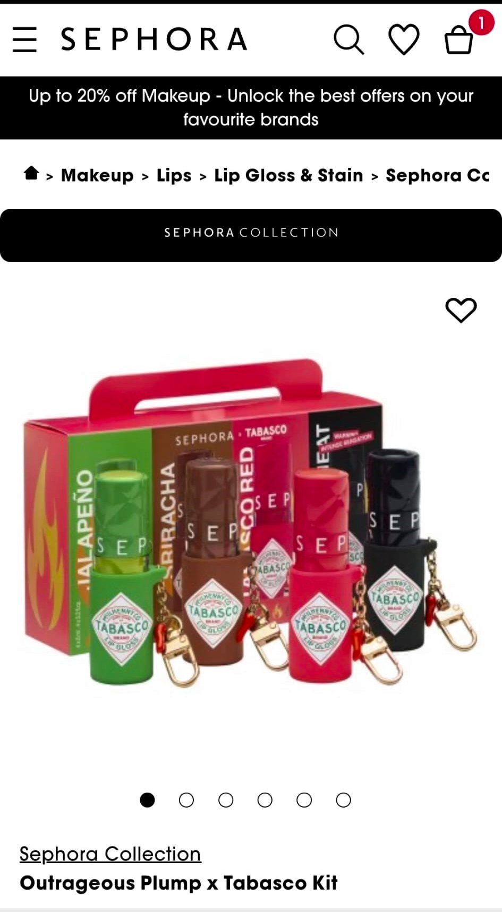

✈️ טיסת אל על ללונדון
המראה מנתב"ג, התחלת החופשה.
2.7.2026 — 6.7.2026
המראה מנתב"ג, התחלת החופשה.
התארגנות ומנוחה במלון Premier Inn London King's Cross. מלון מרכזי ונוח במרחק הליכה קצר מתחנת הרכבת King's Cross / St Pancras, קרוב לתחבורה ציבורית ולאטרקציות. כתובת: 26-30 York Way, London N1 9AA.
פתח ב-Google Mapsפתיחת היום עם גלגל הענק המפורסם של לונדון על גדת הנהר — תצפית פנורמית מרהיבה על העיר. סבב אחד נמשך כ-30 דקות. כתובת: Riverside Building, County Hall, London SE1 7PB.
פתח ב-Google Mapsשייט נהר מודרך לאורך התמזה (כ-40 דקות) עם נוף לבית הפרלמנט, ביג בן, גשר לונדון ומגדל לונדון. ההמראה ממזח London Eye Pier, צמוד לגלגל.
פתח ב-Google Mapsאטרקציה אינטראקטיבית ומצמררת המגוללת את ההיסטוריה האפלה של לונדון עם שחקנים חיים, אפקטים מיוחדים ורכבת מתחת לאדמה. צמוד ל-London Eye. כתובת: Riverside Building, County Hall, London SE1 7PB.
פתח ב-Google Mapsמסעדה הודית פופולרית באווירת בומביי — צמוד למלון באזור King's Cross. 5 Stable Street, London N1C 4AB.
פתח ב-Google Mapsשעה-שעתיים מנוחה והתרעננות לפני ההופעה. חזרה למלון Premier Inn King's Cross.
יוצאים מהמלון לכיוון Stratford. נסיעה ברכבת התחתית מ-King's Cross כ-25 דקות.
פתח ב-Google Mapsערב ראשון של ההופעה המטורפת באצטדיון האולימפי בלונדון.
פתח ב-Google Mapsמתחילים את היום באחד הצמתים המפורסמים בלונדון — מסכי הניאון, מזרקת ארוס והאווירה התוססת. נקודת פתיחה מצוינת לחקור את הווסט אנד ברגל.
פתח ב-Google Mapsחנות הקאלט הגדולה בלונדון לקומיקס, מדע בדיוני, פיגרים ומרצ'נדייז — במרחק הליכה קצר. 179 Shaftesbury Ave, London WC2H 8JR.
פתח ב-Google Mapsחנות מקסימה המוקדשת לעולמה של "עליסה בארץ הפלאות" — מתנות, מזכרות ופריטי אספנות ייחודיים. ממוקמת בשוק קובנט גארדן, במרחק הליכה. כתובת: The Piazza, Covent Garden, London WC2E 8RB.
פתח ב-Google Mapsארוחה איטלקית קלאסית באווירה טובה, בלב Leicester Square. 17-18 Irving St, London WC2H 7AU, בריטניה.
פתח ב-Google Mapsחנות הענק של M&M's על פני 4 קומות בלב Leicester Square — קיר ענק של ממתקים בכל הצבעים, מרצ'נדייז וצילומים מהנים. כתובת: 1 Swiss Court, Leicester Square, London W1D 6AP.
פתח ב-Google Mapsהסתובבות בכיכר Leicester Square התוססת ושיטוט בשוק המקורה של קובנט גארדן. הכל במרחק הליכה.
פתח ב-Google Mapsשעה-שעתיים הפוגה בבית קפה באזור Strand / Covent Garden, ממש ליד התיאטרון — בלי לחזור למלון, חוסכים זמן ונסיעות.
המחזמר המוזיקלי המצליח Beetlejuice the Musical בתיאטרון Savoy Theatre ב-West End. קומדיה מטורפת וסוחפת המבוססת על סרטו של טים ברטון, עם אפקטים מרהיבים ומוזיקה מקורית. משך המופע כ-2.5 שעות. כתובת: Savoy Theatre, Savoy Court, Strand, London WC2R 0ET.
פתח ב-Google Mapsבוקר רגוע בגן יפני מרהיב בלב Holland Park, עם מפל מים, בריכת נוי, דגי קוי וטווסים. כניסה חופשית, פתיחה מושלמת ליום. כתובת: Holland Park, Ilchester Place, London W8 6LU.
פתח ב-Google Mapsנסיעה מזרחה אל ה-City לתצפית פנורמית מרהיבה על לונדון מהגינה הגבוהה בעיר (כניסה עם כרטיס מוזמן מראש). 20 Fenchurch St, London EC3M 8AF.
פתח ב-Google Mapsארוחה קלה באזור Leadenhall Market ההיסטורי והמרשים, צמוד ל-Sky Garden.
פתח ב-Google Mapsחזרה למלון לשעה-שעתיים מנוחה והתרעננות לפני ההופעה.
יוצאים מהמלון לכיוון Stratford להופעה השנייה.
פתח ב-Google Mapsערב שני וסוגר של ההופעה באצטדיון האולימפי בלונדון.
פתח ב-Google Mapsצ'ק-אאוט מהמלון בבוקר והשארת המזוודות בעמדת השמירה של המלון — יוצאים ליום אחרון קליל בלי המזוודות.
כניסה למוזיאון המפורסם בדרום קנזינגטון (10:30–12:30), עם כרטיס מוזמן מראש.
פתח ב-Google Mapsארוחת צהריים וזמן חופשי באזור South Kensington / Kensington High Street לקניות אחרונות (Whole Foods, Sephora ועוד), לפני החזרה למלון.
פתח ב-Google Mapsאיסוף המזוודות מהמלון ויציאה לכיוון שדה התעופה.
חוזרים לארץ.
רשת מזון מקסיקני מהיר ואיכותי - בוריטו, באולים וטאקוס. סניף סמוך ל-Leicester Square. כתובת: 114-116 Charing Cross Rd, London WC2H 0JR.
פתח ב-Google Mapsרחוב תוסס וצבעוני בצפון לונדון, מלא בחנויות אופנה אלטרנטיבית, שווקים (Camden Market), אוכל רחוב מכל העולם ואווירת מוזיקה ופאנק. כתובת: Camden High St, London NW1.
פתח ב-Google Maps
מוצרי איפור, בישום וטיפוח. הסניף המרכזי נמצא ב-Westfield London (Ariel Way, Shepherd's Bush, London W12 7GF), עם סניפים נוספים ברחבי העיר.
פתח ב-Google Mapsרשת סופרמרקטים אורגניים עם מוצרי בריאות, חטיפים ומזון איכותי. הסניף הגדול ביותר נמצא בקנזינגטון (The Barkers Building, 63-97 Kensington High St, London W8 5SE).
פתח ב-Google Maps